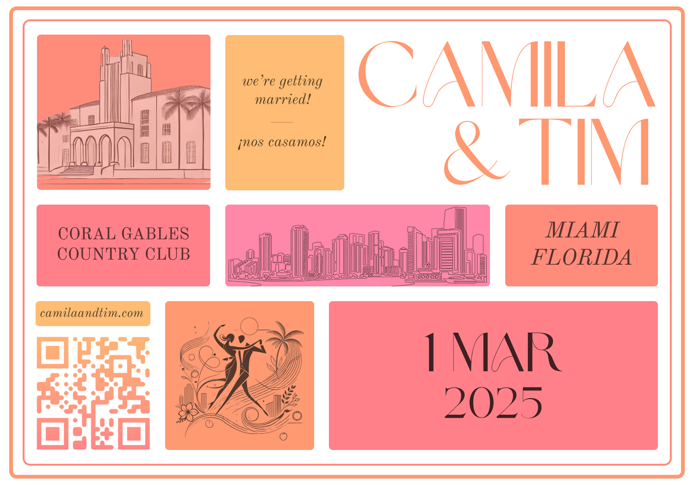
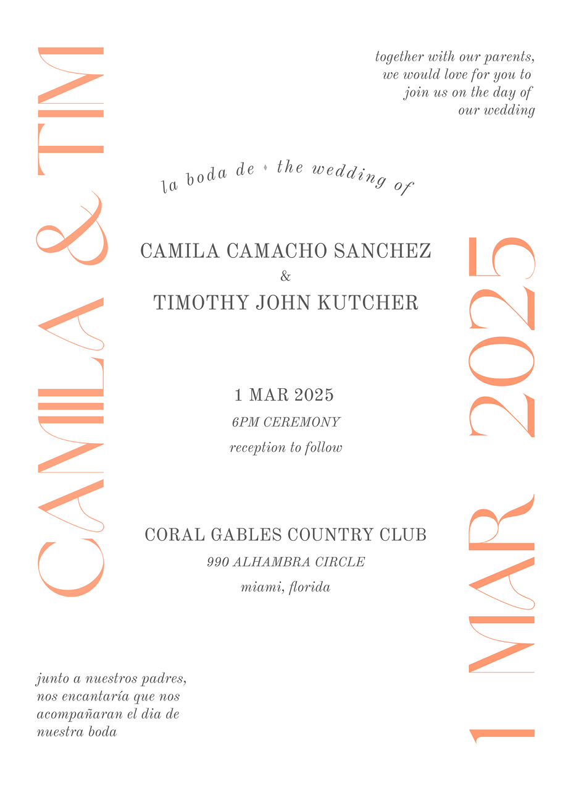
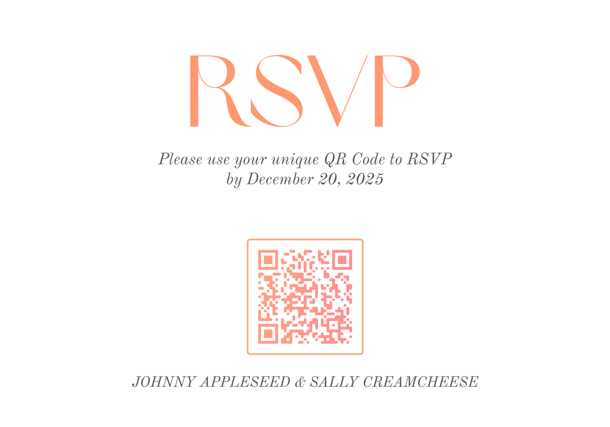
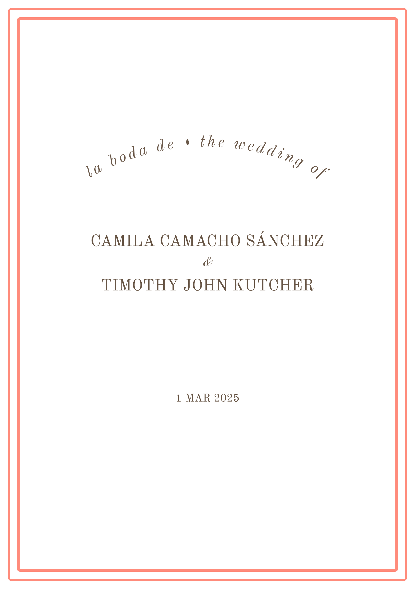
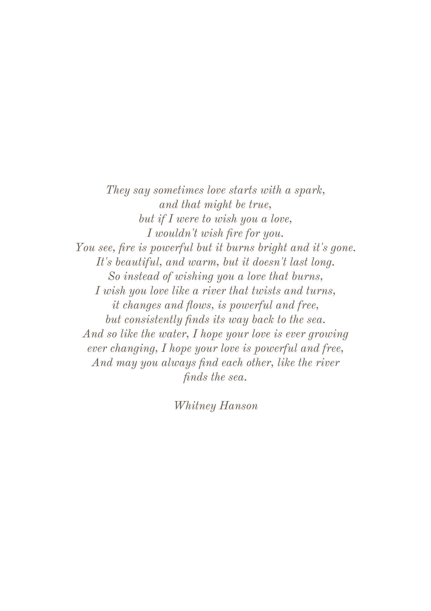
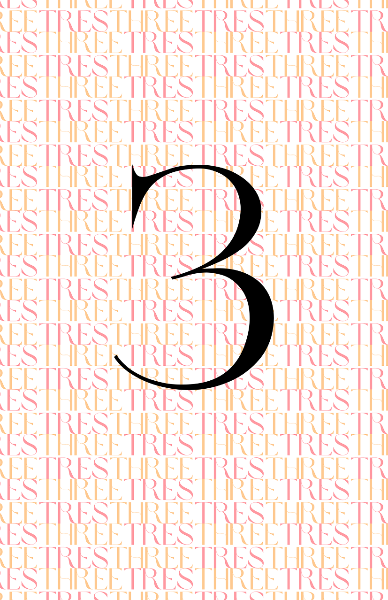
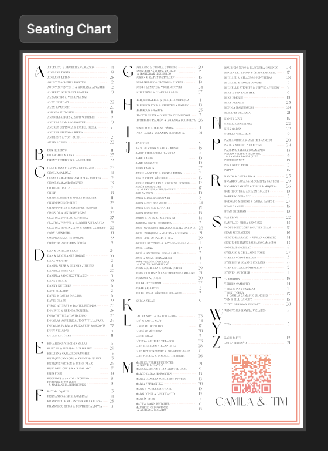
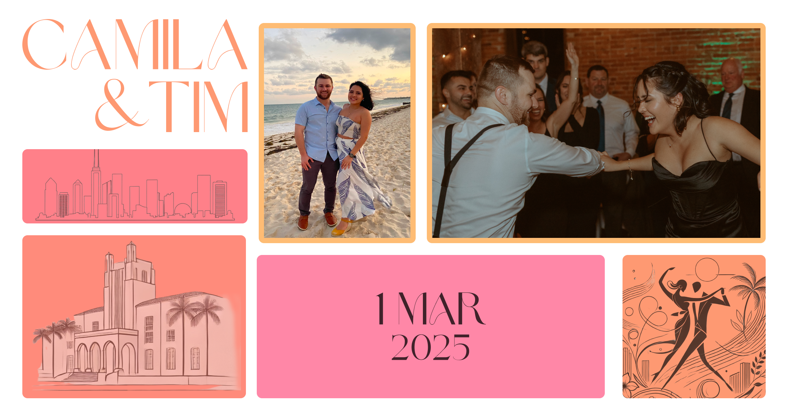

Project notes · Our wedding · 2025
Designing our wedding.
We started with five words for how we wanted the day to feel: youthful, elegant, fun, romantic, and bilingual. We iterated on the visual direction together and used those ideas to guide the invitations, website, printed pieces, and a few small digital tools.

01 / Finding the look
The invitation set the direction.
We landed on warm Miami colors, a mix of expressive and traditional type, hand-drawn landmarks, and English and Spanish throughout. Once those pieces felt right, we reused them in different ways across the rest of the wedding.

Invitation
Starting with the invitation
The centered layout gave it some formality, while the oversized names, bilingual copy, and type running off the edges kept it from feeling too serious.

RSVP insert
The RSVP insert
The front became a little collection of the colors, type, and illustrations. On the back, every guest received their own QR code and Anvilor RSVP link.
02 / RSVP
How the RSVP worked.
Each invitation had a unique link. Scanning the QR code opened an Anvilor form already connected to that guest or household, so people did not have to search for their invitation or create an account.
A link for each guest
The QR code on the insert was generated for the specific person or household receiving it.
The right RSVP form
The link opened the right RSVP flow with the guest’s invitation already associated.
A simpler response
Guests could respond without an account, and we received the answers in a useful, structured format.
03 / Ceremony program
The ceremony program.
For the eight-page program, we pulled the design back: lots of white space, warm brown type, coral rules, and bilingual headings. You can use the controls—or your arrow keys—to flip through it.



04 / Table numbers
Table numbers
One of my favorite elements of the design was the table numbers - using the english and spanish spelling of the number in the brownsugar typeface created a backdrop that captured the mood we were going for. Really happy with how that turned out.
05 / Seating
A searchable seating chart.
The printed chart included a QR code that opened a searchable table finder, giving guests a quicker option on their phones.

06 / Wedding website
The wedding website.
The website used the same colors, wordmark, drawings, and block layout as the printed pieces. Mostly, it was a cheerful place to keep all of the practical information people needed for the weekend.
